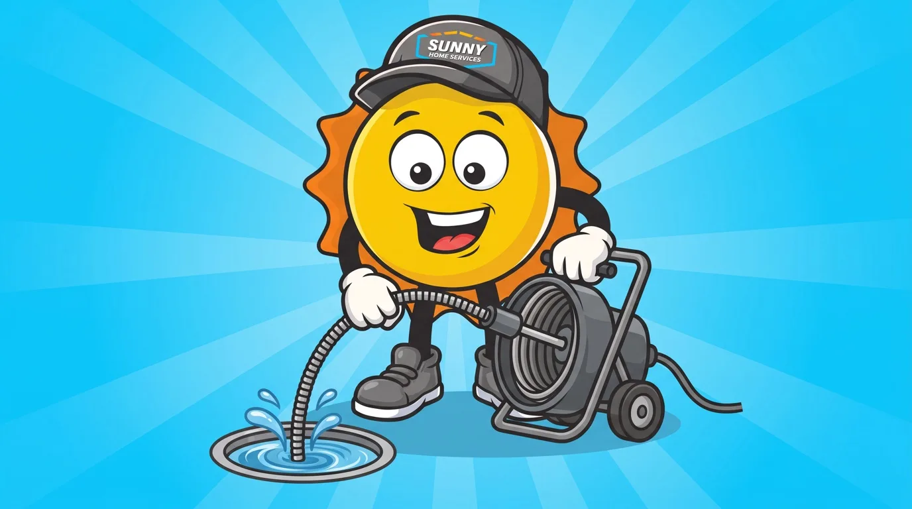
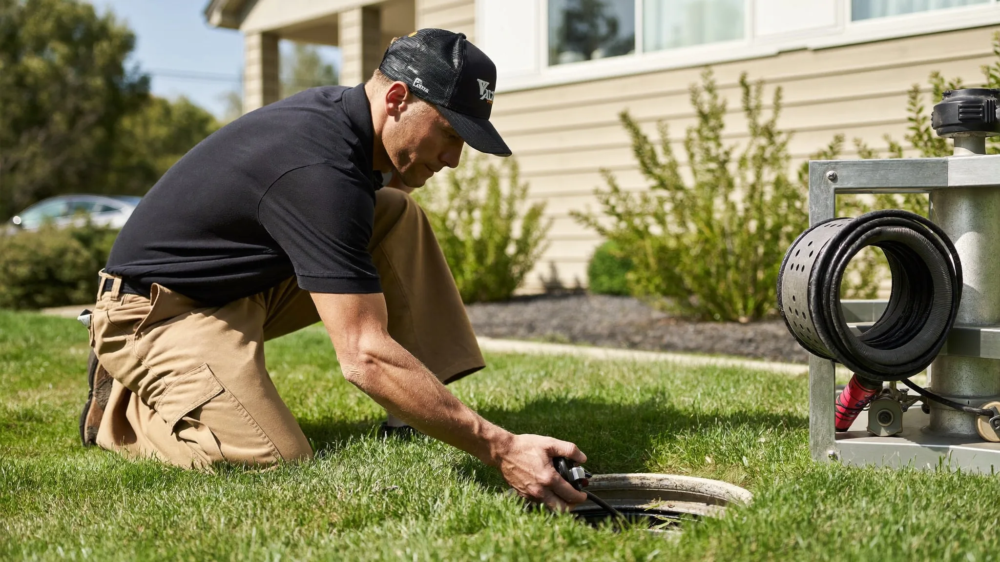

385.853.8116


When a drain backs up or a sewer line fails, you need reliable sewer plumbers in West Jordan, UT, who show up fast and tell you exactly what’s wrong. Sunny Home Services handles everything from a single slow drain to a full sewer line replacement in West Jordan, with same-day appointments and upfront, flat-rate pricing.

Our local drain and sewer services cover more than just unclogging sinks. West Jordan’s wastewater system includes concrete, clay, and PVC sewer mains, and the city’s older infrastructure means pipe conditions can vary considerably from one property to another.
Drain cleaning clears blockages at the source rather than just pushing it further down the line. Our technicians use motorized augers and targeted tools to remove hair, grease, soap scum, and debris from kitchen, bathroom, and laundry drains.
Recurring or slow drains can indicate a partial blockage, damaged pipe, or tree root intrusion farther down the line. A camera inspection can help identify the cause without relying on guesswork.
Hydro jetting uses high-pressure water to clear heavy buildup, grease, and certain obstructions from inside a pipe. It may be appropriate when conventional drain cleaning has not resolved a recurring or severe clog and the pipe is suitable for the method.
Our Wasatch Front sewer line services address the main sewer line that carries wastewater from your home to the city connection. Pipe age, root intrusion, blockages, and ground conditions can cause sewer line problems. The city’s wastewater infrastructure includes concrete, clay, and PVC mains, with concrete and clay mains averaging about 50 years of service life.
Camera inspection can help identify the condition of a sewer line without unnecessary digging, including problems like cracks, offset joints, pipe deformation, and root intrusion. West Jordan’s wastewater system, which includes multiple pipe materials and aging infrastructure, can be assessed through an inspection to determine the condition of a specific sewer line.
Sewer line repair addresses damaged sections of pipe after diagnostics identify the location and likely cause of the problem. Some repairs address a single cracked joint, while others involve a longer section compromised by roots, separated joints, or other pipe damage.
Sewer line replacement may be necessary when a pipe has deteriorated beyond the point of spot repairs. Replacement may involve traditional sewer line installation or trenchless sewer line repair. When trenchless repair or replacement is appropriate, it can reduce the amount of excavation needed compared with traditional digging.
Quick access to 24-hour sewer service near you could matter as much as the fix itself. If you’re searching for emergency drain service near you, Sunny Home Services provides same-day service in West Jordan and across the Wasatch Front when available.
A sewer and drain emergency can involve a backup, gurgling toilet, or other signs that wastewater is not draining properly. Multiple drains backing up at once, sewage odors, or water pooling near a sewer line can indicate a more serious plumbing problem that warrants prompt professional attention.
You may have a problem farther down the drainage system if you notice:
A sewer camera inspection can help with leak detection to pinpoint the cause of a sewer-line problem. West Jordan City places responsibility for the sewer lateral from the building out to and including the connection to the city sewer main on the property owner. The city is responsible for public sewer mains and manholes. If wastewater is backing up, contacting the city can help determine whether the blockage sits in the private lateral or the public system.

West Jordan has a mix of older and newer neighborhoods, and the city’s wastewater system includes concrete, clay, and PVC mains. West Jordan’s 2025 sewer management plan reports that 22% of the city’s sewer lines are more than 50 years old, underscoring the importance of evaluating pipe age and condition when sewer problems occur.
A local plumber who understands this specific mix of soil, tree growth, and pipe age is equipped to catch issues that a generic inspection might miss.
Sunny Home Services provides upfront, flat-rate pricing with flexible financing options and same-day service across the Wasatch Front and Northern Utah, including West Jordan.
For homeowners searching for sewer line service near West Jordan, our membership program includes twice-yearly HVAC and plumbing inspections, priority booking, and member discounts. Check our current offers for additional savings opportunities.

Current offers you can redeem when you book. Mention the one you want when you call.

The sooner a slow drain or a sewer backup is diagnosed, the fewer surprises you’ll face down the line. Sunny Home Services provides same-day sewer and drain service in West Jordan and throughout the Wasatch Front with solutions you can rely on. Contact us today to schedule an inspection or request service for an active plumbing problem.